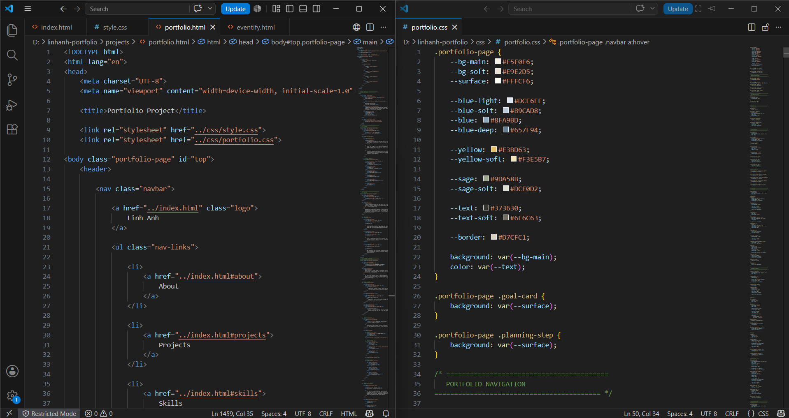
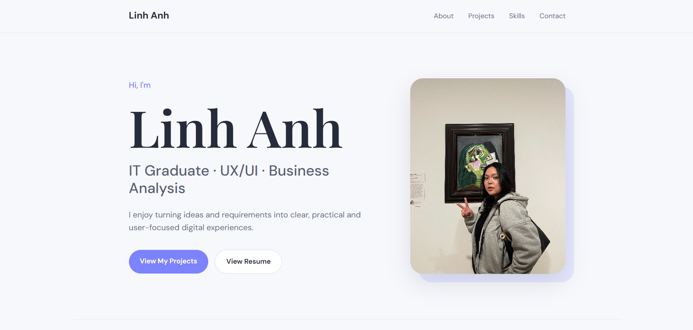
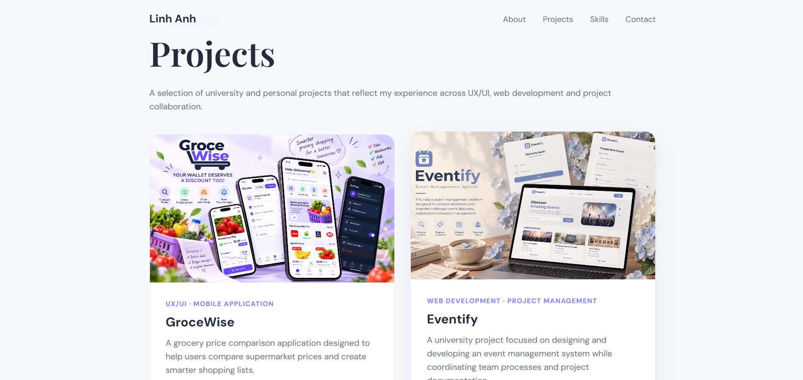
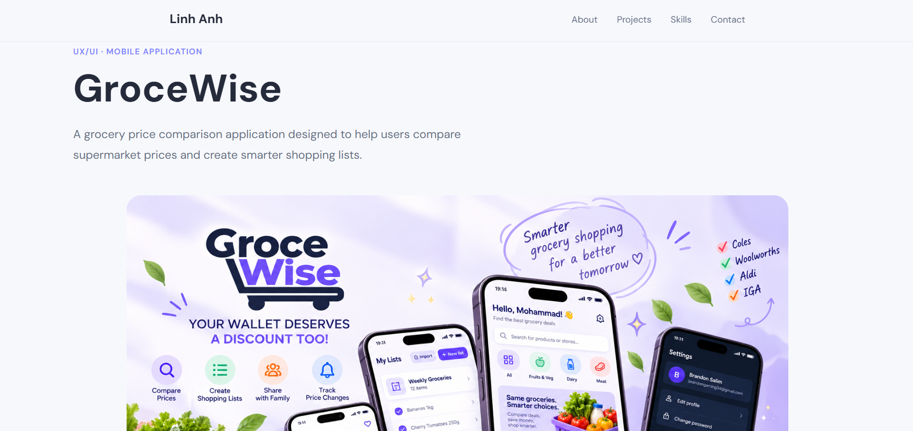
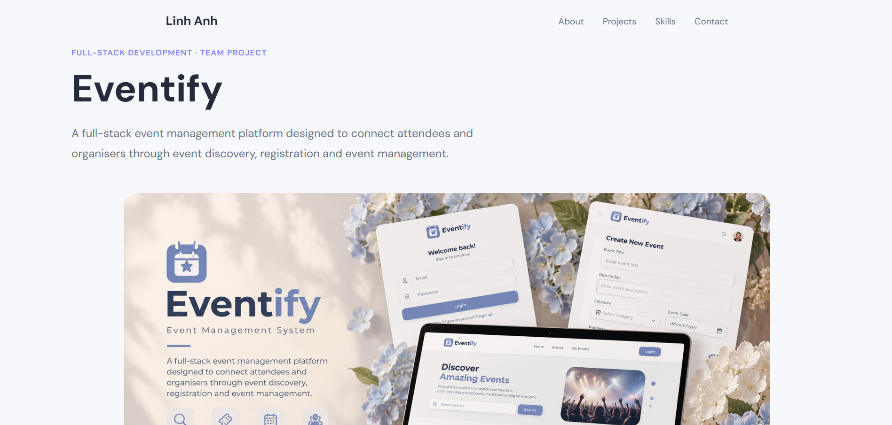
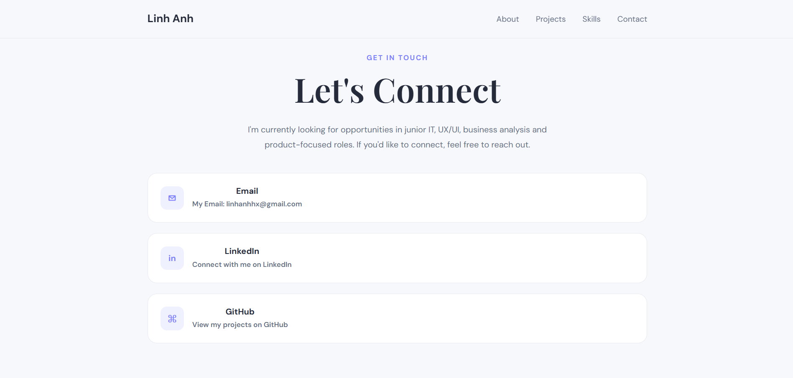

✦
Showcase
Present selected projects through visual case studies that explain the problem, process, development and final outcome — rather than relying on simple project descriptions.
PERSONAL PORTFOLIO · 2026
A responsive personal portfolio designed and developed from scratch to showcase my projects, technical skills and approach to thoughtful, user-focused web design.

OVERVIEW
I designed and developed this personal portfolio to create a central space for presenting my work, skills and development journey.
Rather than using a pre-built portfolio template, I wanted to design the experience myself and treat the portfolio as a complete web project of its own.
The website combines visual design with front-end development, using a consistent design system across the homepage and individual project case studies while allowing each project to maintain its own identity.
THE GOAL
I wanted my portfolio to do more than simply list my skills and university projects. The goal was to create a space that shows how I think, design and build.
Each part of the website was designed to balance personality with professionalism, while making it easy for recruiters and employers to understand my work without needing to read through lengthy project documentation.
Present selected projects through visual case studies that explain the problem, process, development and final outcome — rather than relying on simple project descriptions.
Create a visual identity that feels personal, warm and memorable while still remaining polished and appropriate for a professional portfolio.
Make information easy to scan and navigate across different devices through clear hierarchy, consistent layouts and responsive design.
PLANNING & STRUCTURE
Before focusing on visual design, I planned how visitors would move through the portfolio and what information they would need to understand my work quickly.
The website was organised around a simple homepage and a set of detailed project case studies. This keeps navigation lightweight while giving each project enough space to explain its purpose, process and outcome.
Identify the strongest projects, skills and information that would be most useful to potential employers.
Organise the website into a simple homepage supported by dedicated project case studies.
Develop a reusable case-study structure so different projects still feel like part of the same portfolio.
INFORMATION ARCHITECTURE
The portfolio uses a shallow structure so visitors can move from the homepage to any featured project with minimal steps.
REUSABLE SYSTEM
Once the first project case study was established, I created a reusable structure for the remaining projects. Shared typography, spacing, cards and section patterns help the portfolio feel consistent, while project-specific imagery and content give each case study its own identity.
Overview
Problem / Goal
Planning
Design
Development
Showcase
Challenges
Reflection
DESIGN SYSTEM
I developed a small visual system to keep the portfolio consistent across the homepage and individual project case studies.
The visual direction combines soft botanical colours, warm neutral backgrounds and clean typography to create an approachable identity while maintaining clear hierarchy and readability.
01 · COLOUR
Hydrangea blues form the primary visual identity, supported by warm paper tones, daisy yellow and muted sage accents.
#8FA9BD
#F5F0E6
#E3BD63
#9DA58B
#373630
02 · TYPOGRAPHY
Large expressive headings create personality, while simpler supporting text keeps longer case studies comfortable to read.
Headings · Project titles · Statements
Design should feel clear before it feels complicated.
Supporting typography is kept clean and readable across descriptions, project details, navigation and interface elements.
Body text and supporting information.
03 · COMPONENTS
Repeated components help different pages feel connected while reducing unnecessary visual complexity.
CASE STUDY
Soft surfaces, clear spacing and subtle borders separate information without making the interface feel visually heavy.
DESIGN PRINCIPLES
Professional enough for employers while still reflecting personality.
Clear spacing and hierarchy help longer project stories remain easy to explore.
Shared components connect each project while allowing individual case studies to have their own character.
DEVELOPMENT PROCESS
Once the visual direction was established, I translated the design into a responsive website using HTML, CSS and JavaScript.
Development was iterative rather than linear. I regularly moved between designing, building and refining components as the portfolio evolved and new project case studies were added.
STRUCTURE
HTMLI created the page structure using semantic HTML and organised content into reusable sections for navigation, project showcases, case studies and contact information.
VISUAL SYSTEM
CSSCSS was used to establish the colour palette, typography, spacing, layouts and reusable components that connect the homepage and project pages.
INTERACTION
JSJavaScript supports interactive behaviours where needed, while hover states, transitions and visual feedback make the interface feel more responsive without distracting from the project content.
REFINEMENT
RESPONSIVELayouts were adapted for smaller screens by restructuring grids, adjusting spacing and ensuring content remained readable and easy to navigate across different devices.
BUILDING THE SYSTEM
Shared layout patterns helped maintain consistency across the portfolio, while page-specific styles allowed projects such as GroceWise, Eventify and this portfolio case study to develop their own visual character.
Reusable section layouts
Shared spacing and typography
Project-specific stylesheets
Responsive components

RESPONSIVE DESIGN
Components were designed to adapt rather than simply shrink, allowing the visual hierarchy to remain clear on desktop, tablet and mobile devices.
SYSTEM SHOWCASE
The final portfolio brings together personal branding, selected projects and detailed case studies within one consistent browsing experience.
Each part of the website has a different purpose — from creating a strong first impression to helping visitors explore the thinking, design and development behind individual projects.
FIRST IMPRESSION
A welcoming introduction that communicates who I am, what I do and the type of work I am interested in.


PROJECT DISCOVERY
Project cards provide a visual introduction to my strongest work, allowing visitors to quickly understand the project type and open a detailed case study when they want to learn more.
Clear project hierarchy
Visual project previews
Direct access to case studies
03 · PROJECT CASE STUDIES
Individual project pages share a consistent structure while using project-specific imagery and content to tell a different story.


CONTACT
The portfolio finishes with a simple contact section that gives visitors an easy way to continue the conversation after exploring my work.
Have a project, opportunity or just want to say hello?

THE EXPERIENCE
CHALLENGES & ITERATION
The portfolio did not arrive at its final design in one attempt. As more projects and content were added, several parts of the interface needed to be reconsidered and refined.
Iteration became an important part of the process — particularly when balancing visual personality, readability, consistency and maintainable front-end code.
VISUAL HIERARCHY
The first version relied heavily on pale backgrounds, translucent cards and similar neutral tones. Although the aesthetic felt soft and cohesive, important sections began blending into one another.
Similar background and card colours created limited separation between content.
Blue, yellow and sage accents introduced clearer hierarchy while preserving the soft aesthetic.
I introduced stronger surface contrast and a botanical palette inspired by hydrangea blue, daisy yellow and muted sage.
DESIGN CONSISTENCY
GroceWise and Eventify represent very different systems, so their screenshots, diagrams and project information naturally vary. The challenge was creating consistency without making every case study look identical.
I reused section numbering, typography, spacing, browser frames and content patterns while allowing project imagery and accent colours to remain unique.
CODE ORGANISATION
As the portfolio case study became more visually distinct, adding all of its styles to the global stylesheet increased the risk of unintentionally changing components used by GroceWise, Eventify or the homepage.
Navigation · Footer · Base styles
Palette · Sections · Components
I separated portfolio-specific styling into
portfolio.css and scoped its design tokens
under .portfolio-page to reduce styling
conflicts.
CONTENT DESIGN
University projects often contain large reports, technical documentation and many screenshots. Including everything would make each case study difficult to scan, while including too little would hide the work behind the final interface.
A project card alone does not explain the process or contribution behind the work.
Key context + process + visuals + outcome
Full reports and every technical detail can overwhelm visitors who are scanning quickly.
I condensed each project into a visual case study that prioritises the problem, my contribution, key design decisions, development process and final result.
THE RESULT
Each adjustment solved an immediate design or development problem while also improving the structure of the portfolio as a whole.
REFLECTION & OUTCOME
Building this portfolio became a project in itself — one that brought together design, development and storytelling.
Through the process, I learned how important it is to present technical work in a way that is clear, visual and easy to understand. I also became more confident in creating reusable design patterns, refining interfaces through iteration and making development decisions that support future growth.
The portfolio itself became one of the projects that best represents how I approach design — thoughtful, structured and always evolving.
PERSONAL PORTFOLIO · 2026